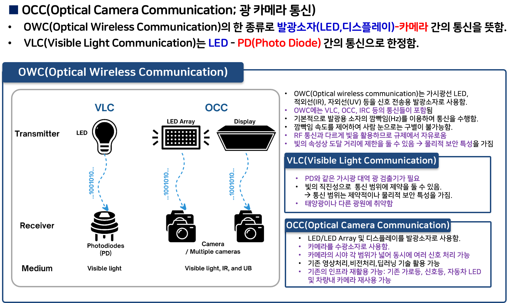
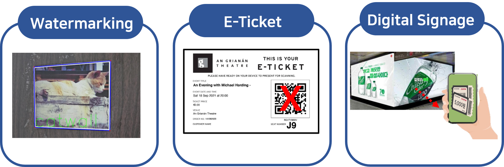
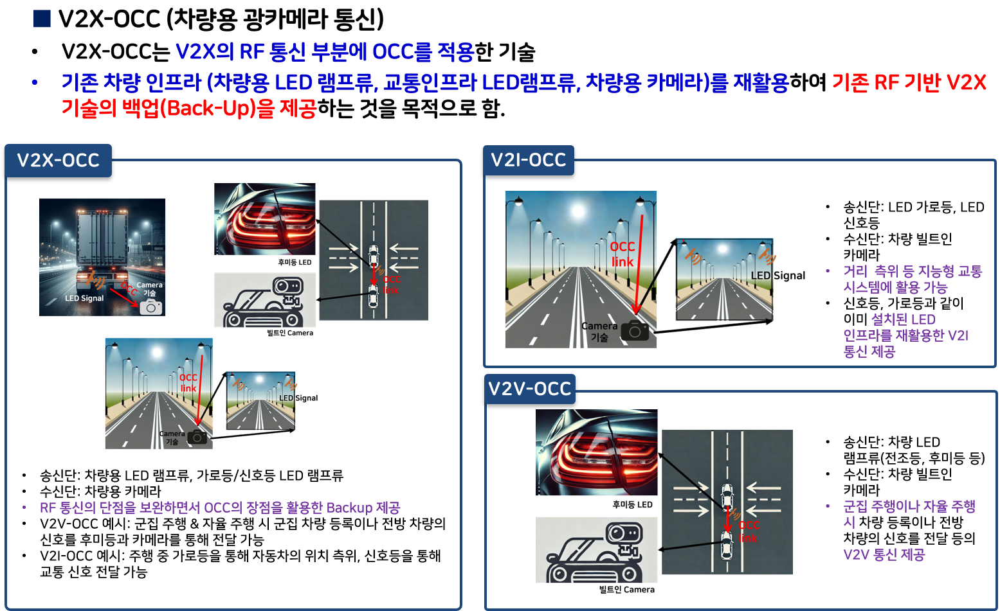
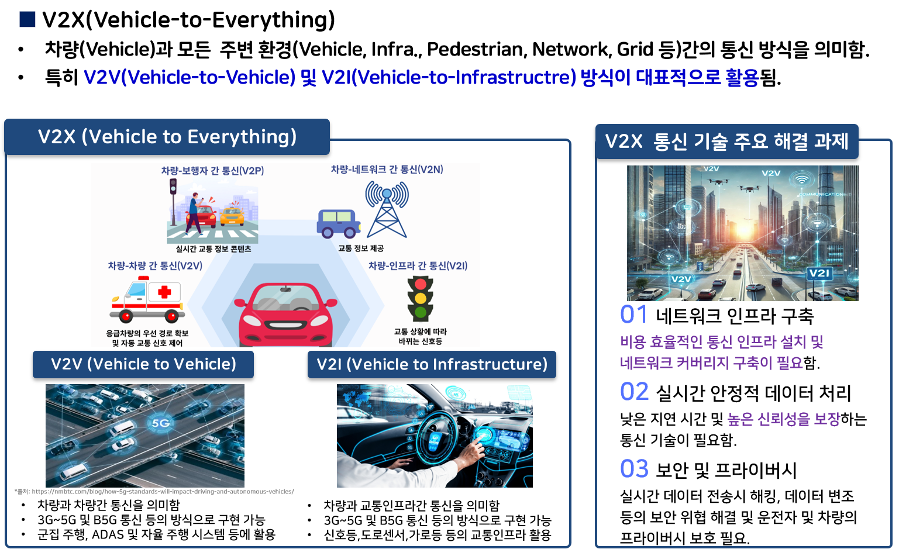
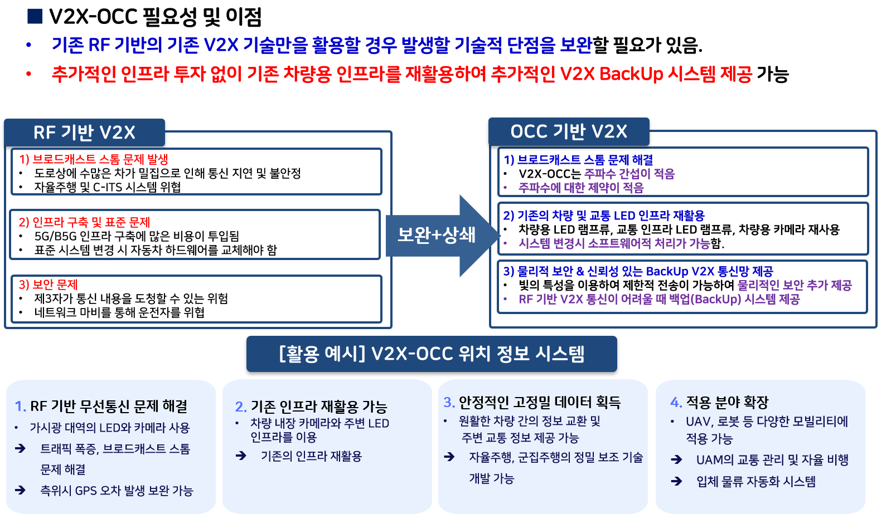

개요
Optical Camera Communication (OCC)는 OWC(Optical Wireless Communication)의 한 종류로 발광소자(LED,디스플레이)-카메라 간의 통신을 뜻합니다.
송신단의 발광소자(LED,디스플레이)의 플리커링(flickerling)을 이용합니다.
QR 코드와 다르게 데이터가 사람 눈에는 보이지 않으므로 보안성이 띄어납니다.
활용 분야
V2X-OCC(차량용 광카메라 통신) 기술

